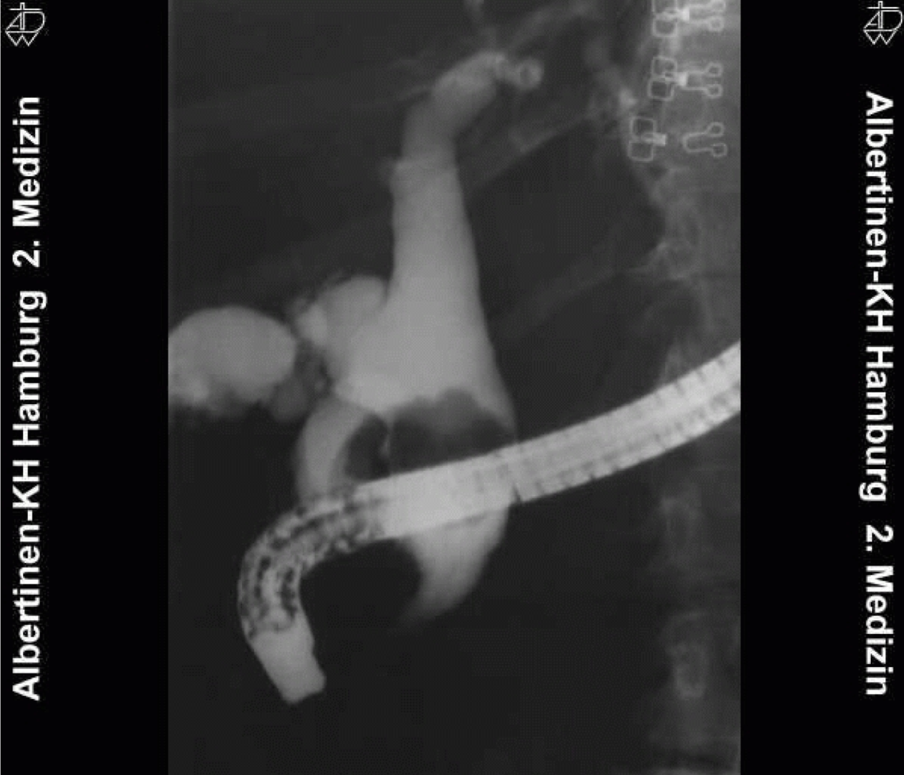

Mirrizi

Impacted gallstone in cystic duct or neck
of gallbladder resulting in obstruction and jaundice
Either direct extrinsic compression by a stone or fibrosis from
chronic cholecystitis
Can result in cholecystocholedochal fistula
Classification
Type I = no fistula
- IA = cystic duct present
- IB = obliterated cystic duct
Types II-IV = with fistula
- II = defect <33% of CBD
- III = 33-66% of CBD
- IV = >66%
Management
Presents with obstructive jaundice or cholangitis
CT/US confirm diagnosis
ERCP to define anatomy and +/- stent prior to surgery
Managed by cholecystectomy for type I, may need a t-tube
II-IV = open cholectystectomy and Roux-en-Y hepaticojejunostomy.